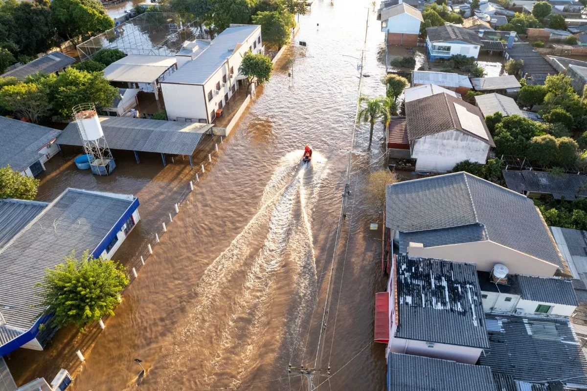
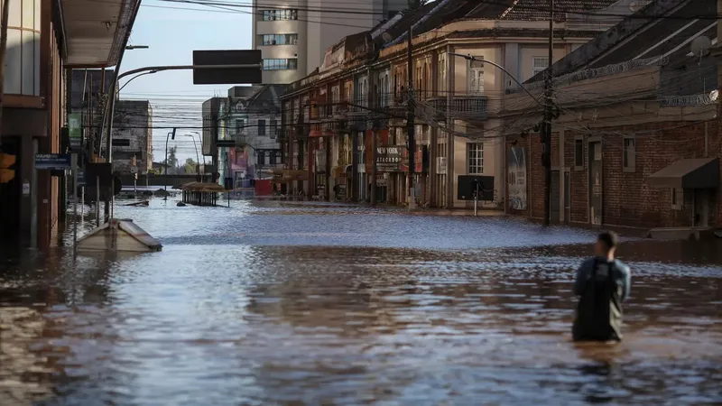
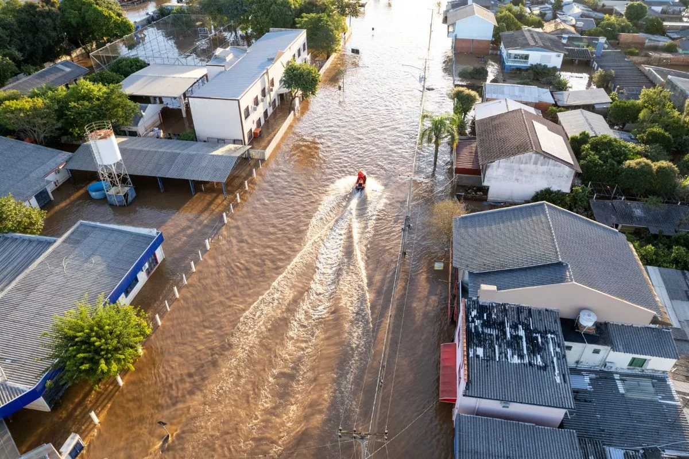
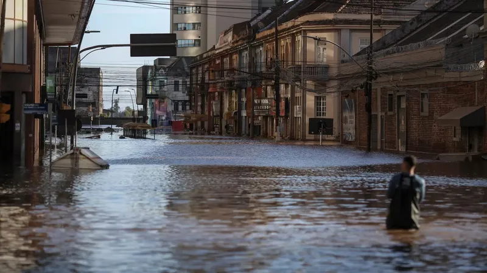

Público-Alvo.
O sistema HydroSafe foi criado para atender dois públicos essenciais em situações de enchentes:
População em áreas de risco
- Pessoas que vivem em regiões vulneráveis a enchentes.
- Alertas por texto, voz, vibração e luz, acessível para todos.
- Modo de Crise automático: interface simplificada, leitura de instruções e envio de localização para emergências.
- Exibe rotas de fuga e abrigos seguros próximos.
Órgãos Públicos
- Defesa Civil, prefeituras e equipes de resposta.
- Monitoramento em tempo real de áreas afetadas.
- Painel inteligente com mapas, alertas e dados geolocalizados.
- Ferramentas para ações coordenadas e respostas rápidas.
HydroSafe é inclusão, tecnologia e ação rápida para salvar vidas.
 


